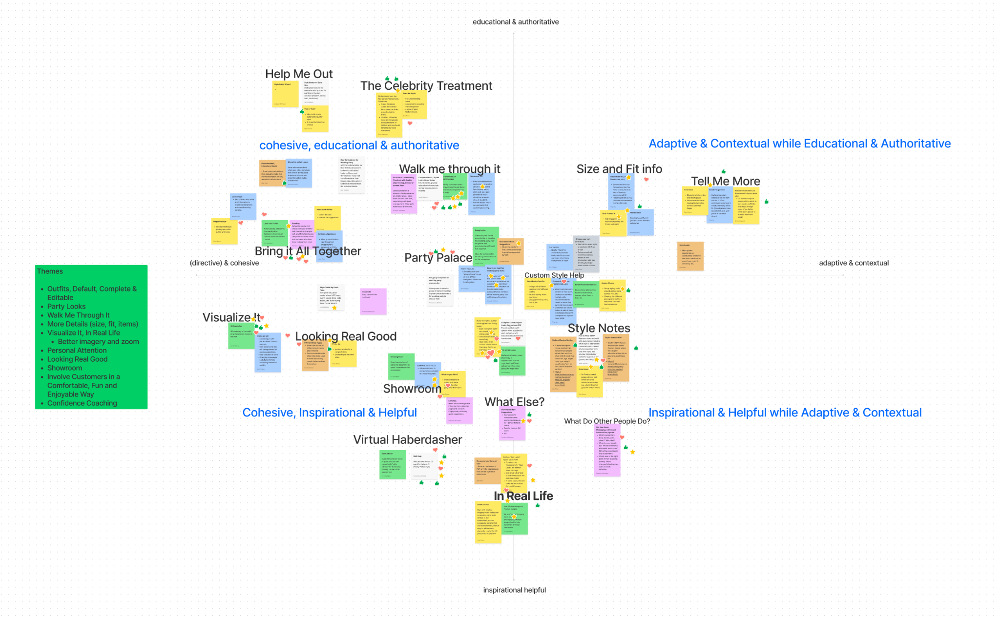
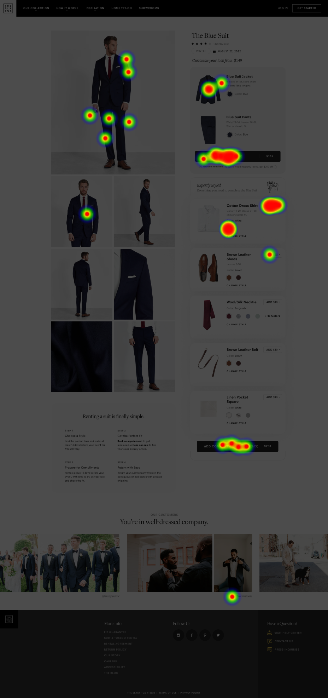
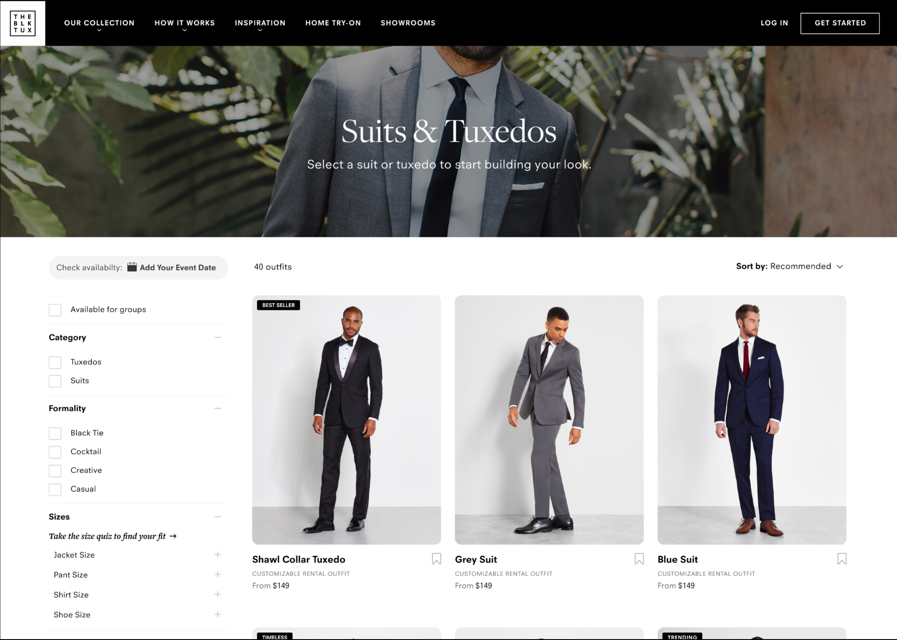
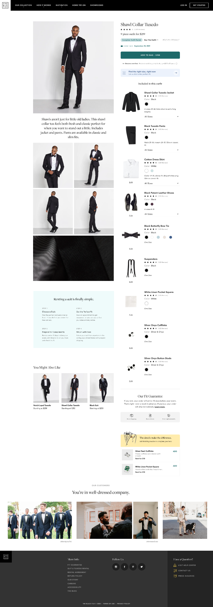

Rebuilding the primary e‑commerce funnel for event‑based formal wear — as a team of one grew into a design org latticed across three subsystems.
The Black Tux rents and sells event‑based formal wear for wedding parties. I joined in early 2021, inheriting a single product designer.
Coming out of COVID‑19 lockdown, pent‑up demand for weddings was accelerating growth. I was brought on to build the design team and prepare the product to capture that demand and maximize revenue.
Unmoderated first‑click, 5‑second tests, and design surveys gave quick signal on card anatomy, micro‑copy, and price presentation. The design team recruited 10 in‑market users for interviews — wrote the discussion guide, led the sessions, and presented findings on buy‑vs‑rent decisions, customization, comparing choices, and price perception directly to stakeholders.



